승강기기사 (2015-09-19 기출문제)
1과목: 승강기 개론
1. 엘리베이터 브레이크(제동기)의 설명 중 틀린 것은? (단, gn는 중력가속도이다.)
- 브레이크의 감속도는 일반적으로 1.0 gn 이상으로 한다.
- 카가 정지된 후에도 부하에 의한 불균형으로 역구동되어 움직이지 않도록 하여야 한다.
- 전동기의 관성력, 카, 균형추 등 엘리베이터의 제반 장치의 관성을 제지하는 역할을 할 수 있어야 한다.
- 승객용 엘리베이터에서는 125%의 부하로 전속력 하강중인 카를 안전하게 감속, 정지시킬수 있어야 한다.
(정답률: 86%)

2. 도어 인터록에 관한 설명으로 틀린 것은?
- 승강장 도어의 안전장치이다.
- 카 도어 개폐시스템의 안전장치이다.
- 승강장 도어에서는 전용 열쇠를 사용하지 않으면 열리지 않는 구조로 되어 있다.
- 문이 닫혀있지 않으면 엘리베이터의 운전이 불가능하게 되어 있는 구조이다.
(정답률: 68%)
3. 소형과 저속엘리베이터의 사용되는 비상정지장치로 로프에 장력이 없어져 느슨해졌을 때 비상정지장치가 작동되는 안전장치는?
- 롤러식 비상정지장치
- 슬랙로프 세이프티 비상정지장치
- 플랙시블 가이드 클램프형 비상정지장치
- 플랙시블 웨지 클램프형 비상정지장치
(정답률: 90%)
4. 회전운동 유회시설이 아닌 것은?
- 코스터
- 비행탑
- 관람차
- 로터
(정답률: 69%)
5. 유압 엘리베이터의 모터 구동에 관한 설명 중 맞는 것은?
- 상승시에만 구동한다.
- 하강시에만 구동한다.
- 하강시는 상승시의 1/2힘으로 구동한다.
- 하강시와 상숭시 모두 같은 힘으로 구동한다.
(정답률: 66%)
6. 전기식엘리베이터에서 카 내부의 유효높이는 일반적으로 몇 m 이상인가?
- 1.8
- 1.9
- 2.0
- 2.1
(정답률: 62%)
7. 승강기용 기어드 권상기의 구성품이 아닌 것은?
- 완충기
- 전동기
- 웜기어
- 브레이크
(정답률: 80%)
8. 승강장문잠금장치의 기계적 내구성 시험조건이 아닌 것은?
- 잠금장치의 내구성은 연속하여 100만 주기를 실시한다.
- 1주기는 가능한 양 방향으로 전후 행정으로 이루어져야 한다.
- 잠금장치의 운동은 충격없이 부드럽게 이루어져야 한다.
- 정격전압, 정격전류의 3배 상태에서 100만 주기를 실시한다.
(정답률: 71%)
9. 조속기에서 기계적으로 속도를 감지하는 부품은?
- 전기스위치 및 로프캐치
- 진자 또는 볼
- 진자와 전기스위치
- 스프링과 전기스위치
(정답률: 82%)
10. 에스컬레이터의 구동 장치에 속하지 않는 것은?
- 핸드레일
- 브레이크
- 스탭체인
- 구동로프
(정답률: 67%)
11. 일반적으로 기계실이 있는 엘리베이터에서 기계실에 설치되는 부품은?
- 조속기
- 완충기
- 균형추
- 종점 스위치
(정답률: 80%)
12. 전망용 엘리베이터에 사용해서는 안 되는 유리는?(오류 신고가 접수된 문제입니다. 반드시 정답과 해설을 확인하시기 바랍니다.)
- 망유리
- 접합유리
- 평유리
- 강화유리
(정답률: 66%)
13. 카 내의 환기를 위한 천정 팬에 대한 설명 중 비상용엘리베이터에 적용되는 기준이 아닌 것은?
- 방적 커버가 설치되어야 한다.
- 비상운전 시 분리되어야 한다.
- 배수되지 않는 위치에 설치되어야 한다.
- 방적처리를 하지 않은 경우 침수 시 차단되어야 한다.
(정답률: 66%)
14. 완성검사 시 전기식엘리베이터의 기계실 바닥면에서 조도는 몇 lx 이상이어야 하는가?
- 100
- 150
- 200
- 250
(정답률: 82%)
15. 호텔, 임대건물 등에 적용하는 시스템으로, 평상시의 교통수요 변동에 대응할 수 있고, 3~5대의 엘리베이터에 적합한 경제적인 운전 조작방식은?
- 군관리방식
- 군승합자동식
- 단식자동식
- 승합전자동식
(정답률: 74%)
16. 플런저의 구조에 대한 설명으로 틀린 것은?
- 관 재료는 KS 규격의 기계구조용 탄소용 강관의 이음매가 없는 것을 사용한다.
- 강관의 두께는 5~20㎜ 정도이다.
- 플런저의 한쪽 끝단에 스토퍼(Stopper)를 설치한다.
- 플런저는 작용하는 총하중이 크면 클수록 그 단면적은 작다.
(정답률: 62%)
17. 승강로의 구조에 대한 기준으로 적합하지 않은 것은?
- 승강로 상단은 콘크리트 또는 철구조물로 되어야 한다.
- 승강로의 벽 및 개구부는 방화상 지장이 없는 구조로 하여야 한다.
- 승강로 내부는 엘리베이터의 승강에 지장이 없는 구조로 되어야 한다.
- 승강로에는 모든 문이 닫혀있을 때 카 지붕 및 피트 바닥 위로 1m 위치에서 조도 100lx 이상의 전기조명이 있어야 한다.
(정답률: 82%)
18. 전기식엘리베이터에서 현수체인의 안전율은 얼마 이상인가?
- 7
- 8
- 9
- 10
(정답률: 69%)
19. 승강기 속도제어방식 중 인버터제어방식은?
- 전압제어
- 전류제어
- 전압과 주파수제어
- 전류와 전압제어
(정답률: 76%)
20. 권상용 로프의 구조에 대한 설명으로 틀린 것은?
- 보통꼬기는 소선과 외부와의 접촉면이 짧고, 마모에 대한 영향이 있다.
- 로프의 중심부를 구성하는 것을 심강이라 한다.
- 로프를 꼬는 방법에는 보통꼬기와 랭그식꼬기가 있다.
- 엘리베이터 권사용 주로프는 주로 5~7호가 사용된다.
(정답률: 68%)
2과목: 승강기 설계
21. 안전율에 해당되는 것은?
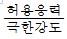
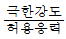
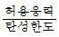
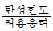
(정답률: 68%)
22. 정격속도 1.5m/s인 엘리베이터의 점차작동형 비상정지장치가 작동할 경우 평균 감속도는 약 몇 gn 인가? (단 감속시간은 0.3초, 조속기 캣치의 작동속도는 정격 속도의 1.4배로 한다.)
- 0.510
- 0.612
- 0.714
- 0.803
(정답률: 57%)
23. 로프를 소선의 파단하중에 따라 구분한 것이 아닌 것은?
- E종
- G종
- A종
- C종
(정답률: 77%)
24. 가이드 레일의 역할이 아닌 것은?
- 승강로의 기계적 강도 보강과 수평방향의 이탈을 방지한다.
- 카와 균형추를 승강로 내의 위치로 규제한다.
- 카의 자중이나 화물에 의한 카의 기울어짐을 방지해 한다.
- 비상정지장치가 작동했을 때 수직하중을 유지해 준다.
(정답률: 65%)
25. 60 Hz, 6극 유도 전동기의 슬립이 3%이다. 이 전동기의 회전속도는 몇 rpm 인가?
- 1064
- 1164
- 1264
- 1364
(정답률: 60%)
26. 전동기 주회로의 전압이 400V를 초과하는 전압일 때 절연저항은 몇 MΩ 이상이어야 하는가?(오류 신고가 접수된 문제입니다. 반드시 정답과 해설을 확인하시기 바랍니다.)
- 0.2
- 0.4
- 0.6
- 0.8
(정답률: 64%)
27. 비상용 승강기를 설치할 경우의 의무사항은?
- 예비전원을 설치할 것
- 비상용콘센트를 설치할 것
- 일반 승강기와 동일한 기종일 것
- 워드 레오나드방식으로 설치할 것
(정답률: 72%)
28. 7층 이상의 공동주택에서 화물용 엘리베이터의 설치 기준으로 타당하지 않은 것은?
- 적재하중은 0.5톤 이상일 것
- 엘리베이터의 폭 또는 너비 중 한 변은 1.35m 이상이고, 다른 한 변은 1.6m 이상일 것
- 계단실형인 공동주택의 경우에는 계단실마다 설치할 것
- 복도형인 공동주택의 경우에는 100세대까지 1대를 설치할 것
(정답률: 52%)
29. 감시반을 설치할 때 옳은 방법이 아닌 것은?
- 감시반과 승강기의 전원을 공동으로 설비한다.
- 감시반의 전원이나 시스템의 고장 시 승강기에는 영향을 받지 않게 설비한다.
- 감시반은 승강기의 운행상태를 쉽게 파악할 수 있는 장소에 설치한다.
- 감시반의 매뉴얼은 감시반 옆에 비치해야 한다.
(정답률: 75%)
30. 전기식엘리베이터의 브레이크 시스템에 대한 설명 중 적절하지 않은 것은?
- 밴드 브레이크를 사용할 수 있다.
- 브레이크 라이닝은 불연성이어야 한다.
- 정상운행에서 브레이크의 개방은 지속적인 전류의 공급이 요구되어야 한다.
- 브레이크 시스템은 전자-기계 브레이크가 있어야 한다.
(정답률: 66%)
31. 엘리베이터의 문닫힘 안전장치가 아닌 것은?
- 마그네틱 인코더
- 초음파장치
- 세이프티슈
- 광전장치
(정답률: 75%)
32. 동력전원이 400V 미만인 경우 접지공사의 종류로 맞는 것은?(오류 신고가 접수된 문제입니다. 반드시 정답과 해설을 확인하시기 바랍니다.)(오류 신고가 접수된 문제입니다. 반드시 정답과 해설을 확인하시기 바랍니다.)
- 제1종 접지공사
- 제2종 접지공사
- 제3종 접지공사
- 특별 제3종 접지공사
(정답률: 66%)
33. 정격속도 1m/s, 정격하중 1150㎏, 오버밸런스율 45%, 전체효율이 0.6인 승강기용 전동기의 용량은 약 몇 ㎾인가?
- 5.5
- 7.5
- 10.3
- 13.3
(정답률: 62%)
34. 도어 시스템에 대한 설명 중 틀린 것은?
- 도어 인터록은 중력이나 압축스프링 또는 두가지의 조합에 의한 방식으로 연결장치 의하여 잠긴 위치로 유지되어야 한다.
- 규정에 의한 인터록장치는 잠금동작과 정상운전을 위한 구동기계의 동작이 동시에 일어나도록 설계되어야 한다.
- 런닝오픈 도어시스템인 경우 인터록이 잠금상태에 있지 않아도 착상구역에서의 주 전동기 동작은 허용된다.
- 자동 동력 작동식 문의 닫힘을 저지하는 데 필요한 힘은 150 N 이하이어야 한다.
(정답률: 44%)
35. 엘리베이터 제어반 내에 사용되지 않는 것은?
- 변압기
- 전자접촉기
- 조속기스위치
- 배선용차단기
(정답률: 60%)
36. 다음 중 카의 구조에 대한 설명으로 틀린 것은?(관련 규정 개정전 문제로 여기서는 기존 정답인 4번을 누르면 정답 처리됩니다. 자세한 내용은 해설을 참고하세요.)
- 카의 벽, 바닥 및 지붕은 충분한 기계적 강도를 가져야 한다.
- 카 출입구의 유효 높이는 2m 이상이어야 한다.
- 카의 벽, 바닥 및 지붕은 불연 재료로 만들거나 씌워야 한다.
- 정원은 정격하중을 65로 나눈 계산 값에 소수점 이하를 반올림한다.
(정답률: 62%)
37. 엘리베이터의 가이드레일과 가장 관계가 먼 것은?
- 단면계수
- 좌굴하중
- 인장력
- 허용응력
(정답률: 52%)
38. 권상기 및 기타 기계대에 고정부착된 장치의 모든 하중이 1200㎏, 주로프의 중량이 100㎏, 주로프에 작용하는 하중이 5000㎏ 일 때 기계대 안전율을 계산할 시 적용하중(㎏)은?
- 10400
- 10800
- 11200
- 11400
(정답률: 42%)
39. 두 개의 기어가 맞물렸을 때 두 톱니 사이의 틈을 무엇이라 하는가?
- 이끝의 틈
- 피치
- 어덴덤
- 백래시
(정답률: 60%)
40. 비상정지장치의 성능 시험과 관계가 없는 것은?
- 적용중량
- 작동속도
- 평균감속도
- 가이드 레일의 규격
(정답률: 73%)
3과목: 일반기계공학
41. 분말로 된 용제를 용접부에 뿌리고 용제 속에 용접봉의 심선이 들어간 상태에서 모재와 용접봉 사이에 아크를 발생시켜 아크의 열로써 용제, 용접봉 및 모재를 용해하여 용접하는 방법은?
- 스폿 용접법(spot welding)
- 시크마 용접법(sigma welding)
- 플라즈마 용접법(plasma welding)
- 서브머지도 용접법(submerged welding)
(정답률: 56%)
42. 코일스프링에서 스프링 소재의 지름만을 1/2배로 하여 다시 만들면 동일 축 하중에 의하여 소재 내에 발생한느 최대전단응력은 몇 배가 되는가? (단, 왈(Whal)의 수정계수(K)는 1로 한다.)
- 1/8
- 1/4
- 4
- 8
(정답률: 40%)
43. 순수 비틀림을 받는 원형봉에 대한 설명으로 옳지 않은 것은?(오류 신고가 접수된 문제입니다. 반드시 정답과 해설을 확인하시기 바랍니다.)
- 봉의 길이에 대한 비틀림각은 변화율을 나타낸다.
- 전체 비틀림모멘트와 전단응력의 합력은 같은 값이다.
- 비틀림에 의한 전단응력은 비틀림각의 변화율과 반지름, 그리고 전단탄성계수의 곱이다.
- 모든 단면이 같은 크기의 비틀림을 받는 경우에는 변화율은 봉의 길이방향에 따라 증가한다.
(정답률: 32%)
44. 키(key)의 설계에 있어서 강도상 주로 검토하여야 하는 것은?
- 키의 굽힘과 전단
- 키의 전단과 압축
- 키의 전단과 인장
- 키의 인장과 압축
(정답률: 48%)
45. 공압 기기를 압력에 따라 분류할 때 배출압력 10kPa 미만의 공압 기기에 대한 일반적인 호칭으로 가장 적합한 것은?
- 송풍기(fan)
- 블로어(blower)
- 펌프(pump)
- 압축기(compressor)
(정답률: 57%)
46. 베르누이 방정식을 실제 유체에 적용시킬 때 손실수도 HL 에 관한 설명으로 가장 적합한 것은?
- 실제 유체에는 적용이 불가능하다.
- 베르누이 방정식의 속도수두를 수정해 주어야 한다.
- 베르누이 방정식의 실제 유체 출구측에 손실 수두 HL을 가해준다.
- 베르누이 방정식의 실제 유체 입구측에 손실수두 HL을 가해준다.
(정답률: 61%)
47. 판의 두께는 16㎜, 리벳의 지름이 16㎜, 리벳구멍의 지름은 17㎜, 피치가 64㎜ 인 1줄리벳 겹치기 이음에서 1피치마다 1500kgf의 하중이 작용할 때 판의 효율은 몇 % 인가?
- 66.5
- 70.6
- 73.4
- 75.0
(정답률: 29%)
48. 유량이 크고 양정이 낮은 경우 적합한 펌프로, 양정을 만드는 힘이 양력인 것은?
- 사류펌프
- 축류펌프
- 원심펌프
- 터보펌프
(정답률: 53%)
49. 다음 중 가열하면 분자간의 결합력이 약해져서 연해지나, 냉각시키면 결합력이 강해져서 굳는 열가소성 수지에 해당하지 않는 것은?
- 페놀수지
- 아크릴수지
- ABS 수지
- 폴리스티렌
(정답률: 51%)
50. 주조하려는 주물과 동일한 모형을 왁스, 파라핀 등으로 만들어 주형재에 파묻고 다진 후 가열로에서 주형을 경화시킴과 동시에 모형재인 왁스, 파라핀을 유출시켜 주형을 완성하는 방법은?
- 셀몰드법
- 다이캐스팅
- 연속주조법
- 인베스트먼트법
(정답률: 68%)
51. 그림과 같이 주어진 단순보에서 최대처짐에 관한 설명으로 옳지 않은 것은?
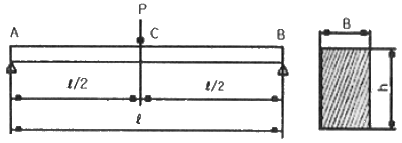
- 하중(P)에 비례한다.
- 탄성계수(E)에 반비례한다.
- 길이(ℓ)의 3제곱에 비례한다.
- 보의 단면 높이(h)의 제곱에 비례한다.
(정답률: 53%)
52. 연삭숫돌의 결합제는 숫돌입자를 결합하여 숫돌의 형상을 갖도록 하는 재료이다. 연삭숫돌 결합제의 필요 조건이 아닌 것은?
- 열과 연삭액에 대하여 안전할 것
- 고속회전에 대한 안전강도를 가질 것
- 입자 간에 기공이 생기지 않도록 할 것
- 균일한 조직으로 임의의 형상 및 연삭액에 대하여 안전할 것
(정답률: 60%)
53. 하중의 작용속도에 따라 분류한 하중은?
- 정하중
- 분포하중
- 휨하중
- 전단하중
(정답률: 62%)
54. 제사한 게이지의 종류별 주용도에 관한 내용으로 옳지 않은 것은?(오류 신고가 접수된 문제입니다. 반드시 정답과 해설을 확인하시기 바랍니다.)
- 필러 게이지 – 틈새의 측정
- 피치 게이지 – 나사의 피치 측정
- 와이어 게이지 – 드릴의 지름 측정
- 레이디스 게이지 – 모서리의 반지름 측정
(정답률: 51%)
55. 다음 중 일반적으로 베어링 재료로 사용하지 않는 것은?
- 켈멧
- 배빗 메탈
- 인바
- 카드뮴계 합금
(정답률: 56%)
56. 지름 60㎜의 축이 500rpm 으로 회전하여 동력을 전달하고, 축의 허용전단응력이 100N/㎝2 일 때 최대허용 전달동력은 약 몇 kW 인가?
- 2.22
- 3.24
- 3.63
- 3.87
(정답률: 35%)
57. 황동의 탈 아연 부식을 막는 방법으로 옳지 않은 것은?
- 아연조각을 연결해 둔다.
- 황동에 2% 정도의 Ni을 첨가한다.
- Zn 30% 이하의 알파(α) 황동을 사용한다.
- 0.1 ~ 0.5%의 As 또는 Sb이나, 1% 정도의 Sn을 첨가한다.
(정답률: 47%)
58. 벨트 전동방식을 사용하는 경우로 가장 적합한 것은?
- 소형 기계의 큰 동력 전달장치
- 정확한 회전수 전달이 필요한 장치
- 주변에 많은 윤활유를 필요로 하는 장치
- 축의 정렬이 평행하지 아니한 동력 전달장치
(정답률: 48%)
59. 구조재료의 허용응력을 결정하기 위하여 재료 실험에서 대상으로 삼는 파라미터가 아닌 것은?
- 정하중에 의한 피로한계
- 취성재료에 대한 극한강도
- 높은 온도에 있어서의 크리프 한계
- 연성재료에 대한 극한강도 및 항복점
(정답률: 43%)
60. 인발작업에서 지름 5.5mm 의 와이러를 4mm로 만들었을 때 단면 수축률은 약 얼마인가?(오류 신고가 접수된 문제입니다. 반드시 정답과 해설을 확인하시기 바랍니다.)
- 27%
- 47%
- 53%
- 73%
(정답률: 38%)
4과목: 전기제어공학
61. 공작기계의 물품 가공을 위하여 주로 펄스를 이용한 프로그램제어를 하는 것은?
- 수치 제어
- 속도 제어
- PLC 제어
- 계산기 제어
(정답률: 56%)
62. 직류전압 E(V)가 인가된 R-L 직렬회로에서 스위치 S를 개방한 시점으로부터
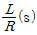
후의 전류값(A)은?(오류 신고가 접수된 문제입니다. 반드시 정답과 해설을 확인하시기 바랍니다.)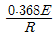
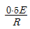
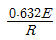
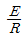
(정답률: 43%)
63. 전기식 조절기의 장점이 아닌 것은?
- 특성이 선형에 가깝다.
- PID 동작이 간단히 실현된다.
- 많은 종류의 제어에 적용되어 용도가 넓다.
- 신호의 전달이 용이하고 지연(lag)이 거의 없다.
(정답률: 50%)
64. R=5Ω, L=20mH 및 가변콘데서 C로 구성된 RLC직렬회로에 주파수 1000Hz인 교류를 가한 후 C를 가변시켜서 직렬공진시킬 때, C는 약 몇 ㎌ 인가?
- 1.27
- 2.78
- 3.52
- 4.77
(정답률: 34%)
65. 그림과 같은 Y결선회로에서 X에 걸리는 전압(V)은?
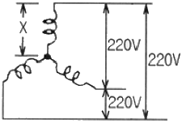
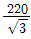
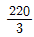
- 110
- 220
(정답률: 58%)
66. 피드백제어계 중 물체의 위치, 방위, 자세 등의 기계적 변위를 제어량으로 하는 제어는?
- 서보기구(servo mechanism)
- 프로세스제어(process control)
- 자동조정(automatic regulation)
- 프로그램제어(program control)
(정답률: 65%)
67. 제어동작 중 정상편차와 속응도가 가장 최적인 것은?
- P동작
- PI동작
- PD동작
- PID동작
(정답률: 59%)
68. 엘리베이터용 전동기의 필요 특성으로 잘못된 것은?
- 가속도의 변화비율이 일정 값이 되어야 한다.
- 회전부분의 관성모멘트가 작아야 한다.
- 기동 토크가 작아야 한다.
- 소음이 작아야 한다.
(정답률: 59%)
69. 변압기 결선에서 제3고조파가 발생하는 결선방식은?
- Y – Y 결선
- △ - △ 결선
- △ - Y 결선
- Y - △ 결선
(정답률: 53%)
70. 단상 교류전력 중 무효전력(Pr)을 바르게 표현한 것은?
- Pr = VIcosθ
- Pr = VI
- Pr = VIsinθ
- Pr = VItanθ
(정답률: 55%)
71. 자동제어에서 희망하는 온도에 일치시키려는 물리량을 무엇이라 하는가?
- 제어대상
- 되먹임량
- 목표값
- 편차된 양
(정답률: 53%)
72. 다음 신호흐름선도와 등가인 블록선도는?
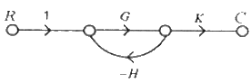
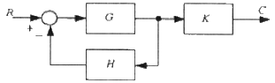
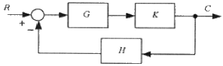
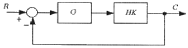
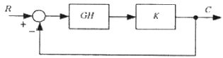
(정답률: 63%)
73. 변압기의 원리를 이해하기 위한 유도결합회로에서 코일 1에 전류 i1을 흘리면 그 주위에는 자장이 생기고 자력선의 일부는 코일 2와 쇄교한다. 이 때 코일 2의 양단에는 자속 쇄교수의 시간적 변화율에 비례하는 전압이 유기되는데 이것은 무슨 법칙을 응용한 것인가?
- 옴의 법칙
- 쿨롱의 법칙
- 패러데이의 법칙
- 가우스의 법칙
(정답률: 51%)
74. 피드백제어계에서 제어장치가 제어대상에 가하는 제어신호로 제어장치의 출력인 동시에 제어대상의 입력인 신호는?
- 목표값
- 조작량
- 제어량
- 동작신호
(정답률: 50%)
75. 자동제어 계통의 안정도를 판별하는 것이 아닌 것은?
- 보드선도법
- 나이키스트 판별법
- 블록선도법
- 루쓰-홀비쯔 판별법
(정답률: 50%)
76. 서보전동기는 어디에 속한다고 볼 수 있는가?
- 증폭기
- 변환기
- 검출기
- 조작기기
(정답률: 52%)
77. 논리식
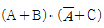
를 정리하여 간단히 할 때 옳은 것은?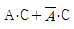
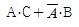
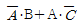
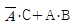
(정답률: 43%)
78. 헤비사이드 브리지는 무엇을 측정하는데 사용되는가?
- 임피던스와 전류
- 정전용량과 그 저항
- 자기인덕턴스와 그 저항
- 반도체 소자의 핀번호 탐색
(정답률: 48%)
79. 온도, 유량, 압력 등 공정제어의 제어량으로 하는 제어로 일반적으로 응답속도가 늦은 제어계는?
- 비율제어
- 프로그램제어
- 정치제어
- 프로세스제어
(정답률: 55%)
80. 코일에 흐르고 있는 전류가 5배가 되면 축적되는 에너지는 몇 배가 되는가?
- 10
- 15
- 20
- 25
(정답률: 65%)
브레이크의 감속도는 일반적으로 1.0 gn 이상으로 한다. 이유는 엘리베이터가 급격하게 멈추는 경우 승객이 안전하게 내리지 못하고 넘어질 수 있기 때문이다. 따라서 브레이크의 감속도는 충분히 높아야 한다.
"카가 정지된 후에도 부하에 의한 불균형으로 역구동되어 움직이지 않도록 하여야 한다.", "전동기의 관성력, 카, 균형추 등 엘리베이터의 제반 장치의 관성을 제지하는 역할을 할 수 있어야 한다.", "승객용 엘리베이터에서는 125%의 부하로 전속력 하강중인 카를 안전하게 감속, 정지시킬수 있어야 한다."는 모두 옳은 설명이다.